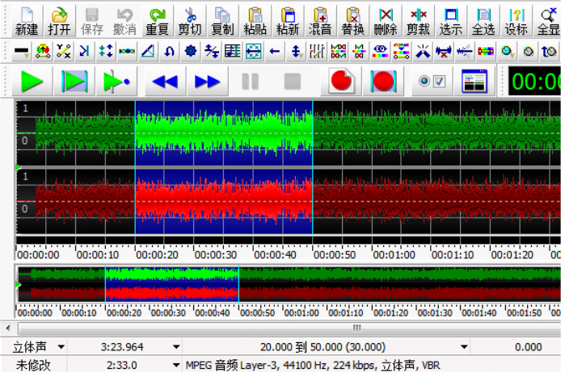
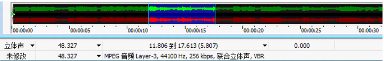
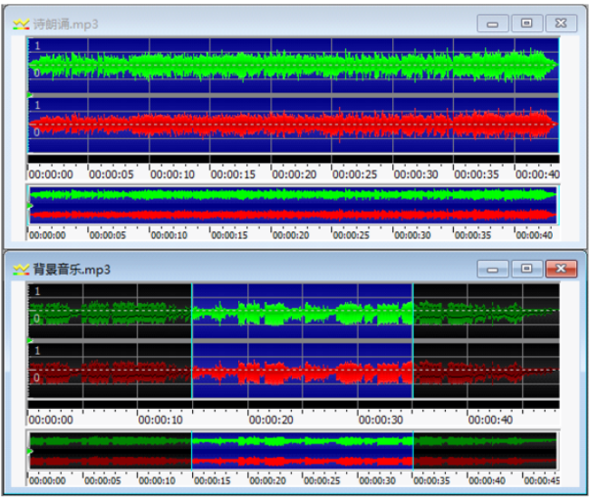
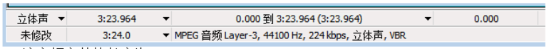
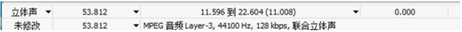

题目导航
goldwave选择练习
返回主页
当前：第1题 / 共25题
1.使用 GoldWave 中的降噪功能可以（ ）。
降低音频的音量
去除音频中的杂音和噪音
增加淡入淡出效果
去除音频中的音量
降噪功能的作用是去除音频中的杂音、噪音，提升音质。
答案解读
2.如需将 “歌曲 1.mp3” 和 “歌曲 2.mp3” 连接合成一个音频，使新合成的音频在播放完 “歌曲 1.mp3” 后接着播放 “歌曲 2.mp3”，可以利用 GoldWave 软件将两个音频文件打开，选中 “歌曲 2.mp3” 的波形区域，执行 “复制” 命令，（ ），将处理后的音频文件另存为 “新歌曲.mp3”。
在 “歌曲 1.mp3” 文件中，选择需要的区域，执行 “替换” 命令
在 “歌曲 1.mp3” 文件中，选择需要的区域，执行 “粘贴” 命令
在 “歌曲 1.mp3” 文件末尾执行 “粘贴” 命令
在 “歌曲 1.mp3” 文件末尾执行 “粘新” 命令
要将两首歌曲首尾拼接，应在歌曲1末尾粘贴歌曲2的音频内容。
答案解读
3.使用 GoldWave 编辑音频文件的操作界面如下图所示，下列说法中错误的是（ ）。

当前选中的区域是第 20 秒到第 50 秒部分
执行复制、粘新操作，会将当前区域复制到新建文件中
执行剪切操作，总的音频长度变短
执行复制操作，会多了一段相同的音频区域
复制操作仅将内容复制到剪贴板，不会直接增加音频片段。
答案解读
4.如图是 GoldWave 软件的音频编辑界面，若删除当前选中的音频区域，剩余音乐长度约为（）。

5.807 秒
11.806 秒
17.613 秒
42.520 秒
从界面信息可知： 音频总时长：48.327 秒 选中区域的起点：11.806 秒 选中区域的终点：17.613 秒 计算选中区域的时长：17.613−11.806=5.807 秒 计算删除选中区域后剩余的音乐长度：48.327−5.807=42.520 秒
答案解读
5.如图所示是在 GoldWave 中为 “诗朗诵.mp3” 配上背景音乐 “背景音乐.mp3”，以下说法错误的是（ ）。

当前选中的区域属于 “背景音乐.mp3” 音频文件
要完成配上背景音乐的操作，要使用到 “复制” 命令
要完成配上背景音乐的操作，要使用到 “混音” 命令
需要先将 “背景音乐.mp3” 修改成和 “诗朗诵.mp3” 一样长
A：从窗口标题可知，选中区域属于“背景音乐.mp3”，正确。
B：配乐时需要先复制背景音乐片段，正确。
C：“混音”命令可将两段音频叠加，正确。
D：混音时无需将两段音频长度修改一致，软件会自动处理，因此该说法错误。
答案解读
6.小云想将电脑上的音频文件拷贝到手机上，为了节省手机空间，需要使用音频编辑软件对电脑中的 wav 格式的音乐进行处理，在保证音乐文件的完整性上使其存储容量变小。以下办法较合适的是（ ）。
将音频文件转换成 mp3 格式
将音频文件的开头和结尾部分裁剪掉
将音频文件的音量设置成静音
将音频文件的音量减低一半
MP3 是压缩格式，相同音质下文件体积远小于 WAV，且能保证音乐完整。裁剪、静音、调音量均不能在保证完整的前提下减小容量。
答案解读
7.使用 GoldWave 编辑某声音文件时的信息如下图所示，下列说法正确的是（ ）。

该音频文件的长度为 3:23
该音频文件是一个双声道文件
该音频文件的文件类型是 WAV
该音频文件已经进行了修改
A：音频长度为 3:23.964，约 3 分 24 秒，并非 3 分 23 秒，错误。
B：界面显示为 “立体声”，立体声即双声道，正确。
C：文件信息显示为 “MPEG 音频 Layer-3”，即 MP3 格式，并非 WAV 格式，错误。
D：界面显示 “未修改”，说明该音频文件尚未进行修改，错误。
答案解读
8.下列操作中，不属于音频信息加工的是（）。
给音频添加音效
对音频进行降噪处理
修改音频文件的文件名
给音频设置淡入淡出效果
修改文件名只是对文件名称进行更改，没有对音频内容进行编辑处理，不属于音频信息加工。
答案解读
9.如图是 GoldWave 软件的音频编辑界面，当前选中区域的时长为（）。

11.596 秒
22.604 秒
10.008 秒
11.008 秒
选中时长 = 结束时间 − 开始时间
22.604 − 11.596 = 11.008 秒
答案解读
进入下一题
提交所有答案并查看统计结果
闯关完成！答题统计
总答题数：0题
答对题数：0题
正确率：0%
↑
↓
确定